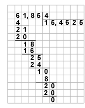
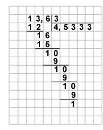

ƒеление дес€тичной дроби на натуральное однозначное число выполн€етс€ так же, как и деление натуральных чисел, но как только заканчиваетс€ деление целой части, в частном ставим зап€тую. ≈сли цифры делимого закончились, а остаток еще не равен нулю, то последовательно приписываем к каждому остатку нули и продолжаем деление.

≈сли в остатке на очередном шаге получилс€ нуль, то деление заканчиваетс€. Ќо в некоторых случа€х мы никогда не получим в остатке нуль. Ќапример, разделим 13,6 на 3.

¬ этом примере получить нуль в остатке невозможно. ¬ таких случа€х говор€т, что в результате получаетс€ бесконечна€ периодическа€ дробь. «аписывают результат следующим образом: 13,6 : 3 = 4,5(3). „исло 3 называют периодом.
ƒеление дес€тичной дроби на натуральное многозначное число происходит аналогично.